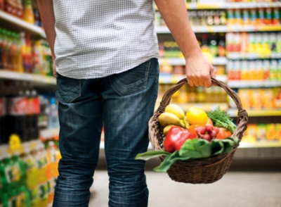

Vollwertig essen und trinken hält gesund. Es fördert Ihre Leistung und Ihr Wohlbefinden.
| Genießen Sie abwechslungsreiche Ernährung mit vielen pflanzlichen Nahrungsmitteln und Vollkornprodukten. | |
| Wählen Sie fünfmal am Tage Obst und Gemüse. | |
| Essen Sie täglich Milchprodukte, Käse oder Joghurt. | |
| Essen Sie wenig Fleisch, also nicht täglich oder nehmen Sie eine kleinere Portion. Essen Sie 1 - 2 x pro Woche Fisch. | |
| Fast-Food und Fertigprodukte enthalten oft versteckte Fette, viel Salz und Zucker. Gönnen Sie sich lieber einen Snack mit Nüssen. | |
| Verwenden Sie pflanzliche Fette, wie Olivenöl und Rapsöl. | |
| Nehmen Sie wenig Zucker und Salz zu sich. | |
| Gönnen Sie sich eine Pause und essen langsam mit Genuss. |

* In Anlehnung an die Deutsche Gesellschaft für Ernährung.